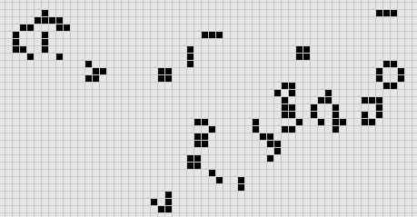
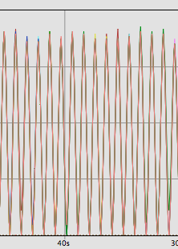
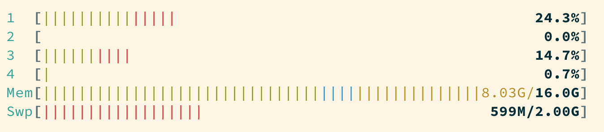

feedback
Test
Other test
everywhere: connect "fix" more clearly to the story
double up on the roadmap, transition to lesson?
misconception vs lesson
shorten intro / lose song lyrics? (or move to the end?)
mud/df descriptions could be shorter?
represent world generation more graphically
better deadlock / images from game? or at least using dwarves
"tell don't ask" could use a diagram
flooding process: story slide is blank
cleaner difference between flooding a process and sending tons of messages
add htop screenshots for memory usage
hand over the reins?
use "we" more?
self-deprecation may be too much?
explain LSP?
hey Jake, if you're out there..?
Dwarlixir
Mistakes were made
The Big Elixir 2019
[Talks that present] new ways of thinking about distributed systems, and talk deeply about lessons learned [...].
We want to hear about the budding innovations [...], even the very strange.
Who you're listening to
Aldric Giacomoni
@trevoke
Director of Engineering at Stash
Why this talk?
I know it's everybody's sin
You got to lose to know
How to win
― Dream On, Aerosmith
Why this talk?
I look at the world and I notice it's turning
While my guitar gently weeps
With every mistake we must surely be learning
Still my guitar gently weeps
― The Beatles, While My Guitar Gently Weeps
Establishing context
A mix of a MUD and Dwarf Fortress
What's a MUD?

What's Dwarf Fortress?

So what we're gonna aim for is…
- A telnet connection for people
- A world map
- With time passing
- Creatures that can move
- Creatures that can die
- Creatures that can reproduce
- Balancing out the ecosystem
Disclaimer
I am not a game designer.
Nothing here constitutes good advice.
Seriously.
Roadmap
[0/6][ ]algorithm improvement[ ]extreme local state[ ]distributed state[ ]schedulers and the "tick"[ ]flooding processes[ ]linux oom killer
Algorithm improvement
Misconception
A list is like an array
AKA "what's the deal with immutability anyway?"
Story
World: Graph → Edges and nodes
- "nodes" are a list of numbers
- generate one edge to a random node from each node
- collect, breadth-first, into islands
- create bridges (single edges) between islands
Key code
def traverse(node, _, visited) when node in visited, do: visited
def traverse(node, edge_list, visited) do
visited = [node | visited]
edges_from_node = direct_edges(node, edge_list)
Enum.flat_map(
edges_from_node,
fn({_s, dest}) -> traverse(dest, edge_list, visited) end
)
end
Impact
Lots of data structures initialized recursively
Lots of data being copied when flattening
VERY SLOW
Fix
def traverse(node, _, visited) when node in visited, do: visited
def traverse(node1, edge_list, visited) do
visited = [node1 | visited]
edges_from_node = direct_edges(node1, edge_list)
Enum.reduce(
edges_from_node,
visited,
fn({_a, b}, acc) -> traverse(b, edge_list, acc) end)
end
Roadmap
[1/6][X]algorithm improvement[ ]extreme local state[ ]distributed state[ ]schedulers and the "tick"[ ]flooding processes[ ]linux oom killer
Lessons
[1/6][X]copying data structures is expensive[ ]extreme local state[ ]distributed state[ ]schedulers and the "tick"[ ]flooding processes[ ]linux oom killer
Extreme local state
Misconception
extreme local state has got to be better than global state
Story
"Actor model?" Moar like extreme object-oriented, amirite?
Impact
Synchronous call
A → B
B → A
A → ☺
My dwarves
Alice asks Bob (and waits)
Bob asks Charlie (and waits)
Charlie asks Alice (and waits)
Deadlocks
Dining philosophers
The classic concurrency problem.
Check it out.
Fix
Some state is global.
I know it's a boring answer.
Roadmap
[2/6][X]copying data structures is expensive[X]tell, don't ask[ ]distributed state[ ]schedulers and the "tick"[ ]flooding processes[ ]linux oom killer
Distributed state
Misconception
Fewer synchronous calls will reduce the opportunity of deadlocks
Story
Moar local state in moar local places
Impact
Accidentally multiple sources of truths
Fix
Some state is global. Use a database.
OR! Go look at erlmud
"separate process" that handles state shifting
Roadmap
[3/6][X]copying data structures is expensive[X]tell, don't ask[X]prefer a single source of truth[ ]schedulers and the "tick"[ ]flooding processes[ ]linux oom killer
Schedulers and the "tick"
Misconception
There won't be a sizable impact to sending all my creatures a message at the same time
Story
The tick (not the blue one)
Impact
All schedulers triggered at same time - literally a heartbeat of intense CPU usage on the box
Fix
More or less "any other way"
I opted for "all manage their own ticks"
Never mind how untestable that makes the system
Smarter fix is probably "bounded global ticks" so that some control can be exerted more easily
Roadmap
[4/6][X]copying data structures is expensive[X]tell, don't ask[X]prefer a single source of truth[X]know your system's CPU needs[ ]flooding processes[ ]linux oom killer
flooding processes
Misconception
It's hard to send a single process too many messages
Story
O(N²) is bad
Impact
The locations crashed
The mobs crashed
The process that printed stuff to the console crashed
Fix
Batch messages
Roadmap
[5/6][X]copying data structures is expensive[X]tell, don't ask[X]prefer a single source of truth[X]know your system's CPU needs[X]actors are single-threaded[ ]linux oom killer
linux OOM killer
Misconception
My world simulation won't grow unbounded in RAM usage
Story
"Emergent Behavior"
Impact
The operating system does what it needs to do to stay up
Fix
Ecosystem
Roadmap
[6/6][X]copying data structures is expensive[X]tell, don't ask[X]prefer a single source of truth[X]know your system's CPU needs[X]actors are single-threaded[X]know your system's RAM needs
BONUS
Yak shaving
It's yaks all the way down
Editors matter
LSP is the new hotness
Alchemist.el
Existing LSP projects
- Marlus Saraiva's
elixir_sense - Jake Becker's
elixir-ls
Created an org on Github
forked the projects, opened issues on original projects to explain why
Created channel on Elixir Slack
elixir-lang.slack.com
#language-server
Recruited folks
Eventually the author of elixir_sense joined
Woot!
Community is active
WOOT!
Last open loop
Still haven't established communication with Jake Becker
Please join us, Jake! We're so thankful for all the work you've done!
And that's the story
All about how
My life got flipped turned upside down
And I'd like to take a minute just sit right there
Tell you how I yak-shaved my way to a community of maintainers